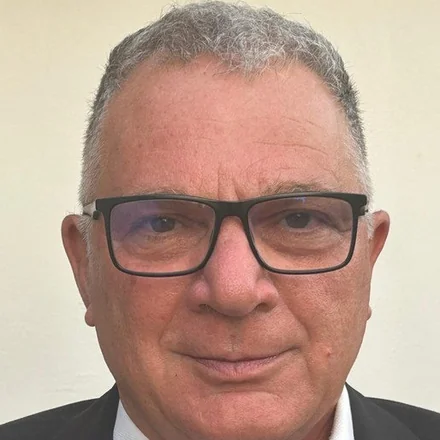

Conosci le competenze del Network Sinergie.
Il Network riunisce professionalità ed esperienze complementari. Esplora le competenze presenti: sarà Sinergie a valutare le tue esigenze e a coordinare, quando opportuno, il coinvolgimento delle figure professionali pertinenti.
Parla con SinergieLe persone e le competenze del Network
Conosci le persone del Network, i rispettivi ambiti di attività e il ruolo di coordinamento di Sinergie. Le prestazioni riservate sono svolte esclusivamente da professionisti abilitati, in autonomia e sulla base di incarichi distinti.
Viviana D’Ortenzio
Coordinamento del gruppo; competenze in ambito fiscale, tributario, successioni, locazioni, previdenza, appalti pubblici, amministrazione, contabilità, paghe e budget del personale
Sede di riferimento: Roma, Lazio
Visualizza profilo ↗Paolo Terrinoni
Sicurezza sul lavoro e relazioni industriali
Regione: Lazio
Visualizza profilo ↗Arturo Rinaldi
Relazioni industriali, pianificazione organici e costo del lavoro
Regione: Lazio
Visualizza profilo ↗Ilaria Cavallin
Diritto penale d’impresa, tributario e societario
Regione: Lazio
Visualizza profilo ↗
Pietro Fazio
Relazioni industriali, dialogo sociale e trasformazioni energetiche, ambientali e digitali del lavoro
Regione: Lazio
Visualizza profilo ↗Serena Salvadori
Formazione, coordinamento didattico e progettazione europea
Regione: Lazio
Visualizza profilo ↗Alessandra Fazio
Consulenza e assistenza legale
Regione: Sicilia
Visualizza profilo ↗Giuseppe Bianco
Consulenza e tutela giuridica
Regione: Sicilia
Visualizza profilo ↗Nessun profilo corrisponde ai filtri selezionati. Prova un'altra ricerca.
I profili presentano informazioni generali sulle attività. L’inclusione nel Network non costituisce certificazione di specializzazione o garanzia di risultato. Eventuali prestazioni professionali sono concordate direttamente con il professionista incaricato, secondo le disposizioni di legge e le regole deontologiche applicabili.
Hai un’esigenza che coinvolge competenze diverse?
Raccontaci in breve il contesto e gli obiettivi. Ti aiuteremo a capire quali professionalità possono essere pertinenti, nel rispetto della loro autonomia.